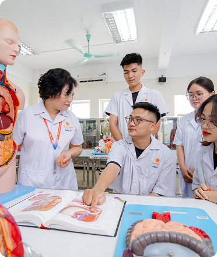

Tổng quan ngành học
Ngành Y khoa học kiến thức về khoa học cơ bản, y học cơ sở, y
học lâm sàng; y học cổ truyền, cộng đồng, nghiên cứu khoa học,
tiếng Anh để có khả năng tiếp cận và ứng dụng các thành tựu khoa
học y học tiên tiến hiện đại trong bảo vệ và chăm sức khỏe nhân
dân.
Mã ngành
7720101
Thời gian đào tạo
6 năm
Bằng cấp sau tốt nghiệp
Bác sĩ Y khoa theo phôi bằng của Bộ Giáo dục và Đào tạo.
Tổ hợp xét tuyển
- Toán, Lý, Hoá (A00)
- Toán, Lý, Anh (A01)
- Toán, Hóa, Sinh (B00)
- Toán, Sinh, Anh (B08)
Bằng cấp sau tốt nghiệp
Bác sĩ Y khoa theo phôi bằng của Bộ Giáo dục và Đào tạo.

Điểm nổi bật trong chương trình đào tạo
Chương trình đào tạo gắn liền thực tiễn, đội ngũ giảng viên giàu
kinh nghiệm và hệ thống đối tác doanh nghiệp mạnh mẽ.
Theo chuẩn quốc tế và quốc gia
- Xây dựng theo phương pháp C.D.I.O và dựa trên chuẩn năng lực bác sĩ y khoa của Bộ Y tế Việt Nam (2014).
- Tuân thủ chương trình khung đào tạo Đại học ngành Y của Bộ Giáo dục và Đào tạo.
Đội ngũ giảng viên hàng đầu
Giảng viên cơ hữu bao gồm 01 Giáo sư, 07 Phó Giáo sư, 08 Tiến
sĩ, 34 Thạc sĩ & hơn 100 giảng viên thỉnh giảng giàu kinh
nghiệm và tâm huyết. Các thầy cô từng là các chuyên gia y học,
cán bộ quản lý, bác sĩ có trình độ cao tại các bệnh viện,
trường đại học Y hàng đầu Việt Nam.
Phát triển kỹ năng toàn diện
- Đào tạo ngoại ngữ, kỹ năng mềm, công nghệ thông tin và thái độ y đức.
- Khuyến khích sinh viên tham gia nghiên cứu khoa học ngay từ những năm đầu.
- Rèn luyện năng lực tự chủ, tự chịu trách nhiệm và phát triển bản thân.
Năng lực đầu ra
của sinh viên
Năng lực đầu ra của sinh viên
Cấu trúc
chương trình học

Đào tạo Tiến sĩ
Tuyển sinh 36 ngành đào tạo thuộc 04 khối ngành bao gồm: Sức
khoẻ, Kỹ thuật - Công nghệ, Kinh tế - Kinh doanh và Khoa học
Xã hội & Nhân văn. Trong đó có nhiều ngành học HOT như Y
khoa, Dược học, Công nghệ thông tin, Công nghệ bán dẫn, Công
nghệ kỹ thuật ô tô, Quản trị kinh doanh, Marketing,
Logistics & Quản lý chuỗi cung ứng, Thương mại điện tử,
Thiết kế đồ hoạ, Truyền thông đa phương tiện, Ngôn ngữ Hàn
Quốc, Ngôn ngữ Trung Quốc,...
Phương pháp học tập & giảng dạy
Cơ hội việc làm sau khi
tốt nghiệp
-
Làm việc tại các bệnh viện và cơ sở y tế
- Bác sĩ điều trị tại các bệnh viện công lập và tư nhân từ tuyến huyện đến trung ương.
- Làm việc tại các khoa lâm sàng như Nội khoa, Ngoại khoa, Sản khoa, Nhi khoa, và các chuyên khoa khác.
-
Giảng dạy và nghiên cứu
- Giảng dạy tại các trường đại học, cao đẳng y khoa hoặc trung tâm đào tạo y tế.
- Nghiên cứu viên tại các viện nghiên cứu y học, dược học, hoặc công nghệ y sinh.
-
Làm việc trong lĩnh vực quản lý y tế/ Làm việc tại các tổ chức quốc tế và phi chính phủ
- Chuyên viên quản lý tại các cơ quan y tế như Bộ Y tế, Sở Y tế, hoặc các tổ chức y tế địa phương. Tham gia vào công tác hoạch định chính sách và quản lý dịch vụ y tế.
- Tham gia các tổ chức y tế quốc tế (WHO, UNICEF) hoặc các tổ chức phi chính phủ (NGO) trong lĩnh vực chăm sóc sức khỏe cộng đồng.
-
Mở phòng khám tư hoặc tham gia tư vấn y tế
- Tự mở phòng khám đa khoa hoặc chuyên khoa riêng.
- Làm tư vấn viên về sức khỏe, dinh dưỡng, hoặc phục hồi chức năng.
-
Phát triển sự nghiệp trong lĩnh vực y tế công nghệ cao
- Làm việc tại các công ty công nghệ y tế, phát triển thiết bị y tế hoặc phần mềm quản lý bệnh viện.
- Tham gia vào lĩnh vực y học cá nhân hóa và ứng dụng trí tuệ nhân tạo trong y tế.